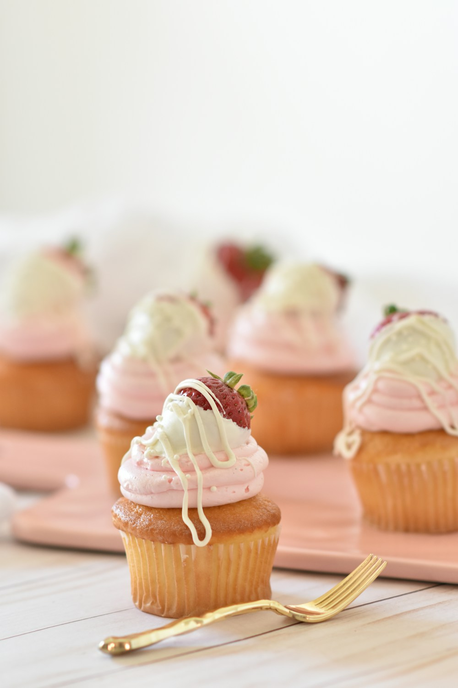
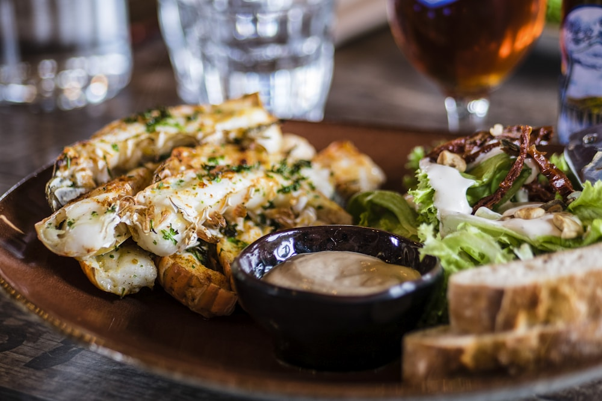
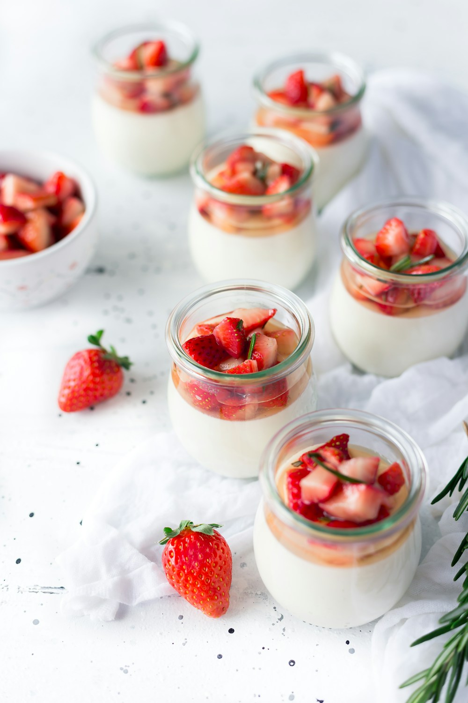
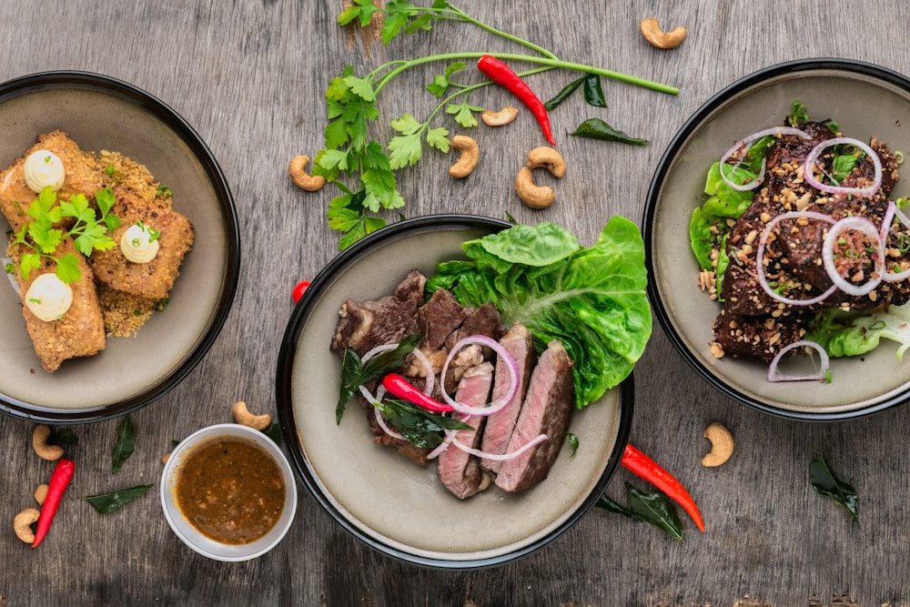

+1-888-777-5845
181 Mercer Street, New York, NY 10012, United States
Explore our published monographs examining high-methoxyl pectin gelation, carotenoid thermal kinetics, and sweet-and-savory stone fruit gastronomy.

An exhaustive food chemistry study on high-methoxyl stone fruit pectin, sucrose crystallization barriers, and thermal coagulation in pure apricot jams.

Biochemical investigation into traditional solar dehydration, beta-carotene stability, and enzymatic browning suppression in Turkish sun-dried apricots.
A pomological exploration of California heritage orchards, chilling hour requirements, and the unparalleled sweet-tart flavor balance of Blenheim drupes.

Culinary physics of 729-layer laminated butter dough, almond emulsion stability, and caramelized stone fruit moisture barrier management in haute pâtisserie.

Sensory gastronomy research pairing slow-roasted apricot reductions with cave-aged sheep cheeses, smoked salts, and wild aromatic botanicals.
Thermodynamic heat distribution, copper ion enzyme binding, and rapid water vapor flash-off in small-batch artisanal confiture fabrication.